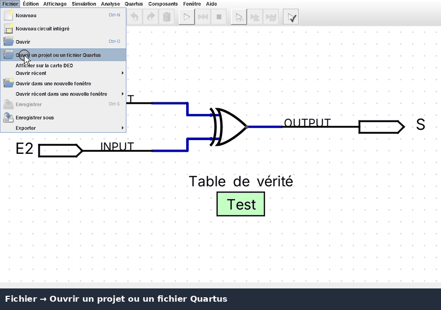
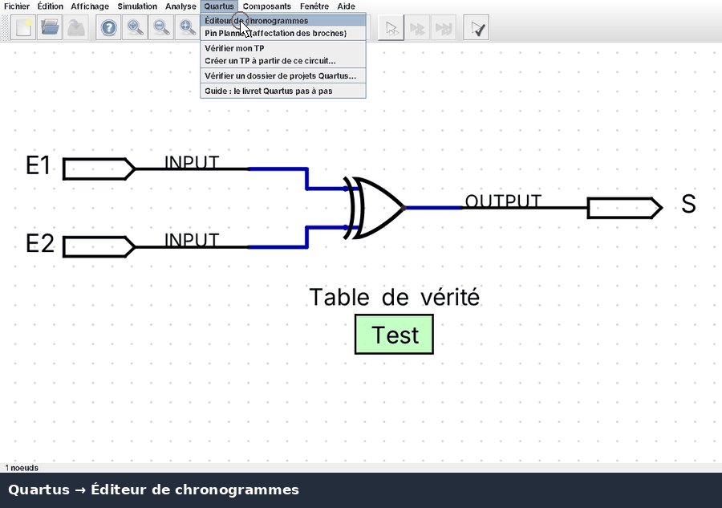
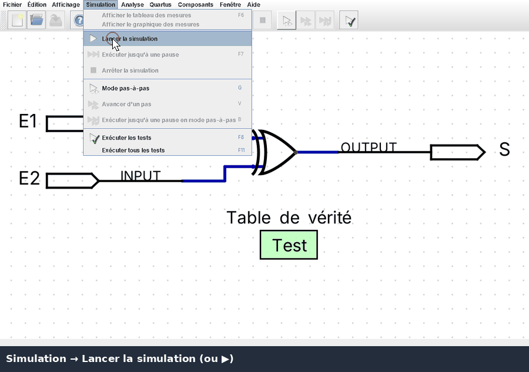
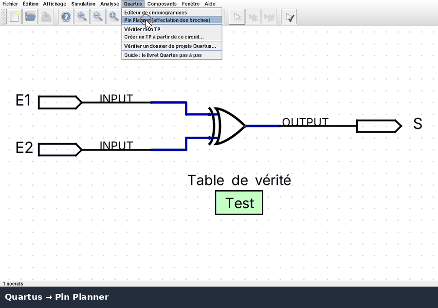
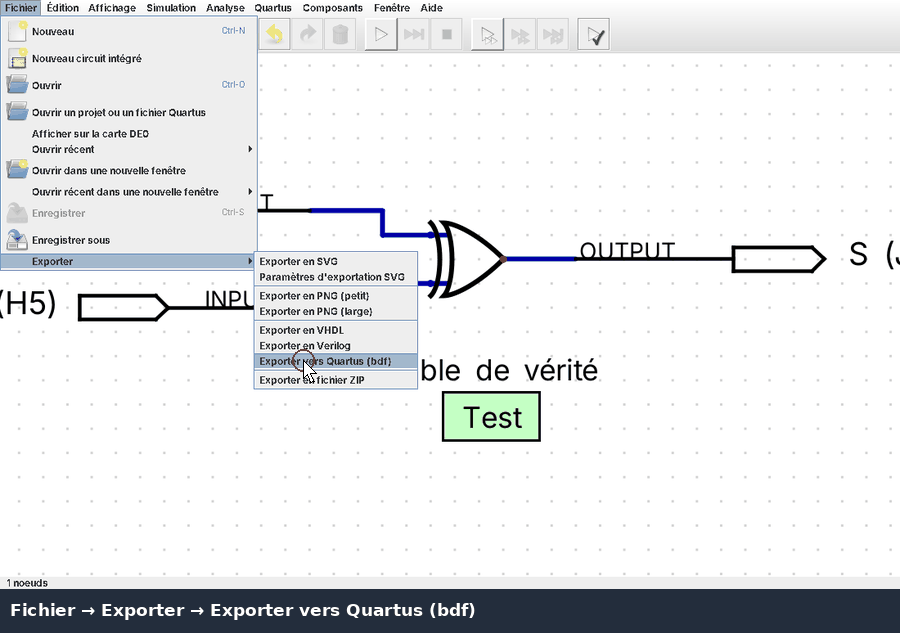
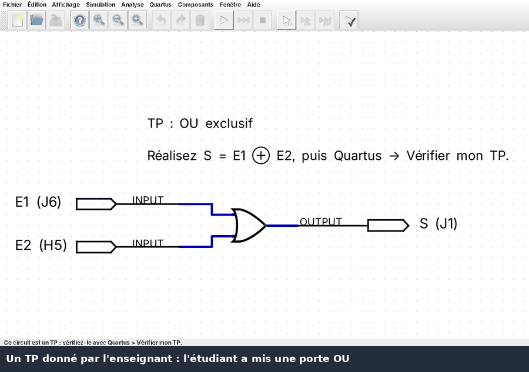

This guide follows the steps of the booklet "Simulation sous Quartus" (§ 14 to 17) and shows how to do them in
this application. The example is the circuit ouex of the booklet: inputs E1, E2 and output
S = E1 xor E2, found in the folder projets/ouex. The animations show the French user interface.
§ 14 Open a project · § 15.1 Waveforms · § 15.2 Simulation · § 16 Pin Planner · § 17 Program the board · Labs · Teachers
File → Open Quartus project or file opens a .qpf, a .bdf or a VHDL/Verilog file.
The design is converted (folder digital next to the project) and wiring errors or missing blocks are
reported, like Analysis & Synthesis. A project with pin assignments opens on the virtual DE0 board.
To simulate a part ("Set as Top-Level Entity"), simply open its .bdf.

Quartus → Waveform editor replaces the Waveform Editor and the Simulator Tool: click on a step of an input
to change it, drag to draw, Shift+drag to select an interval. Clock…, Count…, Value…, 0,
1 and Invert work on the selected input. End time and Grid size are those of Quartus.
The outputs are simulated after every change, Functional like in the booklet or Timing with a delay per
gate. Save… writes a .vwf file which Quartus can open.

Simulation → Start of Simulation (or ▶): click on an input to change it, the outputs follow immediately. Simulation → Run Tests (F11) checks the truth table of the Test element.

Quartus → Pin Planner shows the DE0 board: select a signal, then click on a switch, button, LED or segment (or drag the signal onto it). As in the booklet: E1 → SW0 (J6), E2 → SW1 (H5), S → LEDG0 (J1). Show on the DE0 board opens the virtual board.

Programming needs Quartus and the board on USB. File → Export → Export to Quartus (bdf) writes the design and,
if missing, the Quartus project with the pin assignments. Then open the .qpf in Quartus, compile and
program the .sof file.

A lab given by the teacher contains hidden tests. Draw the circuit, then Quartus → Check my lab shows the score and, if the teacher allowed it, the first wrong row.

Create a lab: draw the solution with a Test element (the waveform editor provides the test data with Copy as test), then Quartus → Create a lab from this circuit. The copy for the students keeps the inputs and outputs, the solution can be removed and the tests are hidden (not encrypted).
Check a folder: Quartus → Check a folder of Quartus projects imports and simulates every project of a
folder and lists missing blocks, errors and failed tests. Command line:
java -cp Digital.jar CLI quartusCheck -dir folder -report report.md.